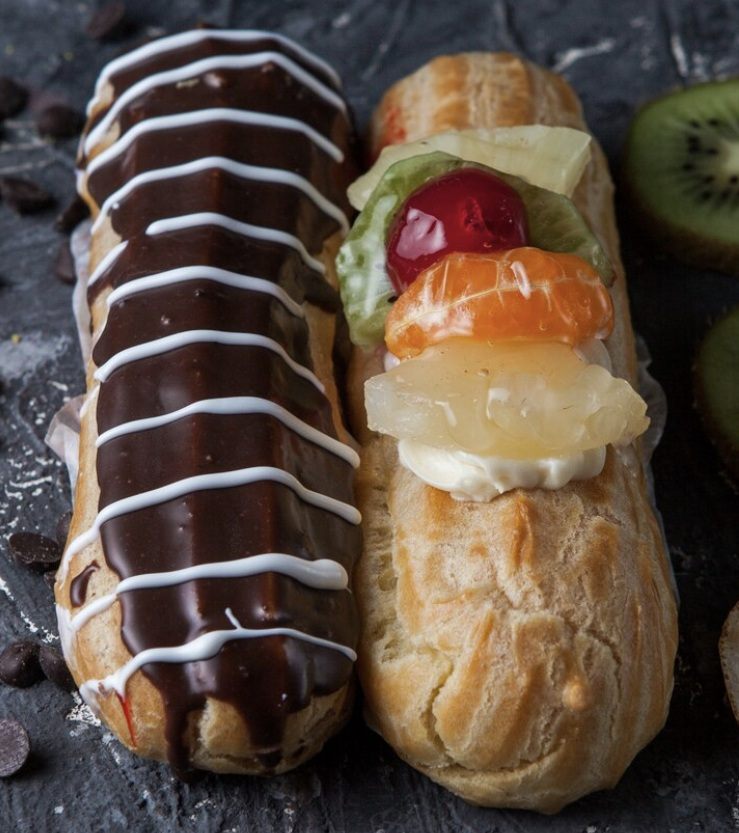
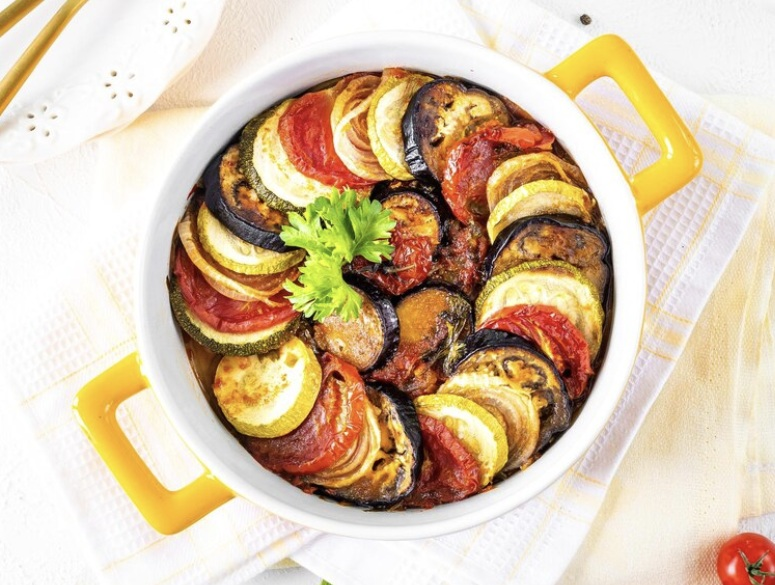
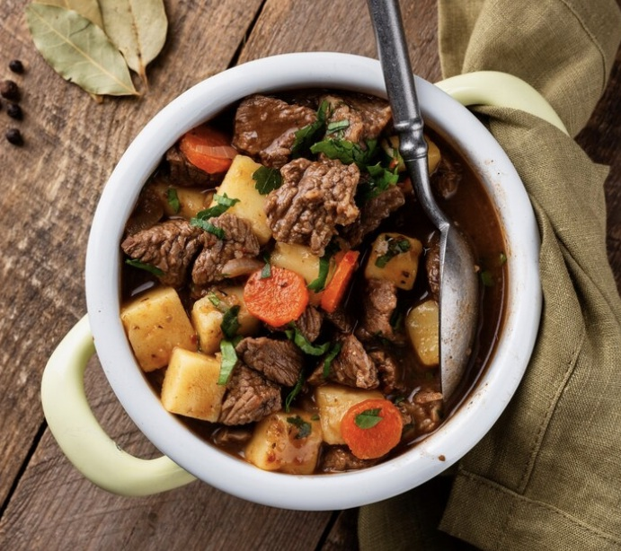
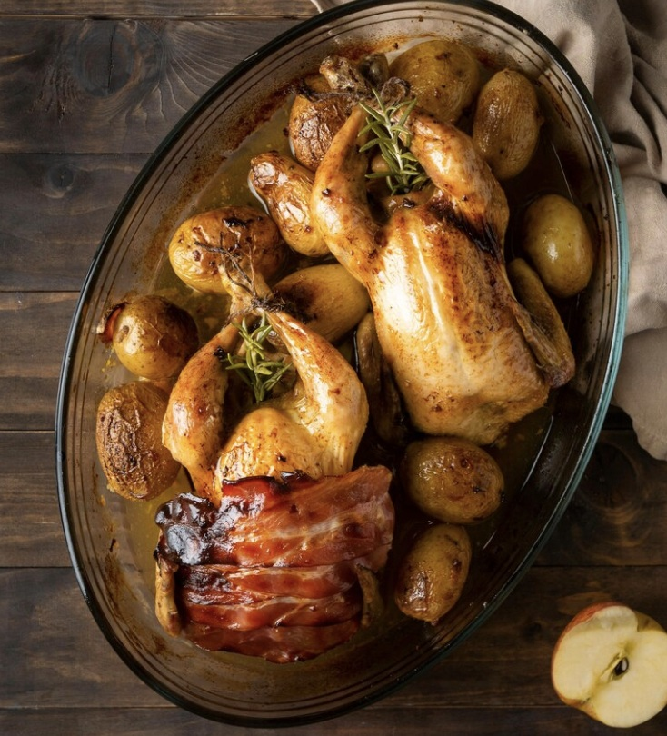

Popular Dishes

Eclair
Ingredients: Milk, Butter, Sugar, Flour, Egg yolks, Chocolate chips, Whipped cream.
View Recipe

Ratatouille
Ingredients: Olive oil, Garlic, Carrot, Tomatoes, Basil, Parsley, Eggplant, Tomatoes, Zucchini
View Recipe

Beuf Bourguignon
Ingredients: Bacon, Beef, Carrot, Onion, Garlic, Flour, Tomato paste, Mushroom, Butter
View Recipe
Bouillabaisse
Ingredients:Leek, Chilli, Olive oil, Onions, Garlic, Tomato puree, Spices, Mussels, Fish, Potato, Egg, Lemon juice, Baguette
View Recipe

Coq au vin
Ingredients: Chickem, Red wine, Onions, Thyme, Bay leaf, Mushrooms, Butter, Flour, Tomatoes, Garlic, Beef, Bacon
View Recipe